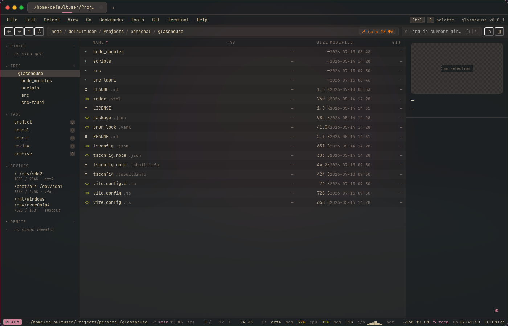

a desktop file manager for Windows and Linux
with tabs, a built-in terminal and git status

running on Linux (Hyprland); the Windows build has the same layout
Each tab has its own history. Private tabs aren't added to recent folders.
A terminal drawer (xterm.js) with several shell tabs that follow the folder you're browsing. Profiles cover local shells, WSL distros and ssh hosts.
Repositories are detected with libgit2. The path bar shows the branch and pending changes, the file list has a status column, and the Git menu can stage, commit and blame.
Create and extract .zip, .tar.gz, .tar.zst and .7z from the file list. Zip is built in; the others use the system tar and 7-Zip.
Color tags with sidebar filters, pinned folders, and a list of recent folders.
8 color themes. Dialogs, context menus, prompts and notifications are drawn by the app, so they follow the theme. Layout and display settings export to a .glasshouserc file.
Command palette (Ctrl+P), fuzzy search in the current folder, find in files, h/j/k/l in the column view, and shortcuts for menu commands.
Built on Tauri 2: a Rust backend with the system webview (WebView2 or WebKitGTK) instead of a bundled browser. The release binary is about 15 MB.
# prerequisites: Rust, Node 20+, pnpm # linux: webkit2gtk-4.1 (arch) / libwebkit2gtk-4.1-dev libgtk-3-dev (debian) # windows: WebView2 + VS Build Tools (tauri prerequisites) $ git clone https://github.com/Johnson-Anthony/glasshouse $ cd glasshouse $ pnpm install $ pnpm tauri:dev # dev mode $ pnpm tauri:build # windows installers $ pnpm tauri build --bundles appimage,deb # linux packages
Or download the pre-built binaries: a Windows .msi/.exe installer and Linux .AppImage/.deb packages. They're unsigned, so Windows SmartScreen shows a warning the first time you run the installer.
React 18, TypeScript and Vite, with xterm.js for the terminal. No UI component library; the interface is plain CSS.
Rust and Tauri 2, with git2, notify (file watching), portable-pty, sysinfo and zip. About 70 commands are exposed to the frontend.